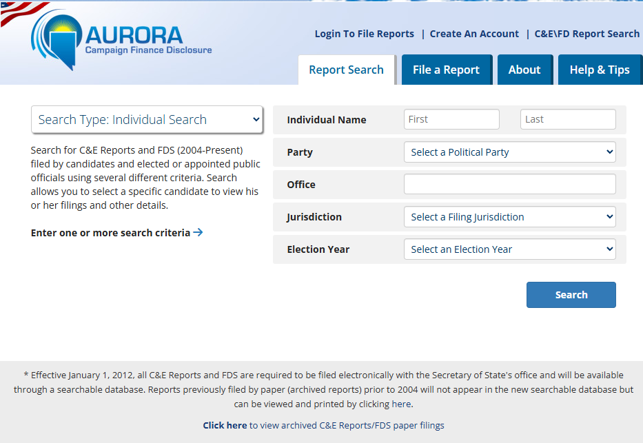

In Nevada politics, access to campaign finance data has never been equal.
Not because the data is secret. It is all public record. But the process of getting to it — registering accounts, submitting manual requests, waiting for files to arrive by email — has historically filtered out everyone except the campaigns and consultants who already had the infrastructure to deal with it.
That gap has a cost. Campaigns that cannot quickly answer basic questions about their own fundraising, their donor base, and their opponent's spending make worse allocation decisions. They miss opportunities in underperforming districts. They spend money in the wrong places. They walk into competitive races without the situational awareness that should be table stakes.
What the Data Actually Contains
AURORA is Nevada's campaign finance disclosure system, maintained by the Secretary of State's office. Every contribution made to a Nevada candidate, PAC, or committee. Every expenditure. Every independent expenditure. It is the authoritative source of truth for Nevada political money — candidates are legally required to file into it.
The data answers questions campaigns pay to answer: Where are my donors concentrated? Which cities am I underperforming in? How is my opponent spending? What is my burn rate compared to cash on hand? Is my fundraising improving or plateauing?
These are not nice-to-haves. They are the inputs to decisions that determine whether a race is winnable.
Why Most Campaigns Never See It
AURORA does not have a public download link or an API. To get bulk data, you register an account, navigate a separate request portal, add datasets to what is literally a shopping cart — for free public data — submit, and wait for files to arrive by email or FTP.

When the files arrive, you have six relational CSV tables with no documentation and no analytics layer. Joining them, filtering for the right candidates, and turning the raw transactions into actionable numbers is a multi-hour engineering task. Every data refresh starts the process over.
For well-resourced campaigns and established consulting firms, this friction is manageable. They have staff and pipelines built across multiple cycles. The upfront investment has already been made.
For everyone else — challengers, local races, first-time candidates, consultants adding Nevada to their book — the data is effectively out of reach. Decisions get made on gut feel, past experience, or whatever can be assembled in a few hours before the next call.
What Changes Now
BallotBase indexes the full AURORA dataset and keeps it current on Nevada's filing schedule. Enter any Nevada candidate or committee and get a complete analytics dashboard — total raised, total spent, donor geography, spend by category, monthly trends, and where the money is going by city. No AURORA account. No manual requests. No waiting for files.
The campaigns that have historically had the data advantage built it through years of infrastructure investment. BallotBase makes that same intelligence available to any campaign in the state — in seconds, not hours.
Nevada is a genuine swing state with competitive legislative races drawing serious outside money. The campaigns operating there should be making decisions with the same information their opponents have. Now they can.

You can see the full feature set on the Nevada campaign finance analytics page.
Working a Nevada race and need to see what the data actually says?
Get a Live Demo →